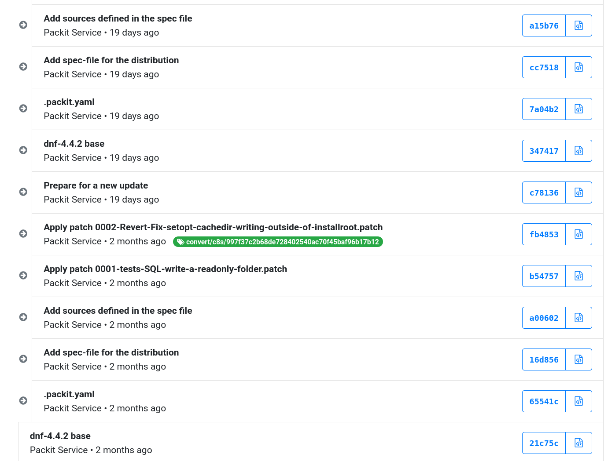

class: center, middle # Everyone can contribute to RHEL now! ## CentOS Dojo @ FOSDEM 2021 <div class="footer"><h3>Tomas Tomecek</h3></div> --- # `/who "Tomáš Tomeček"` .left-column[ * Principal Software Engineer @ Red Hat * Product Owner of Packit project * Containers, automation, integration, packaging * I ❤ free & open source software ] .right-column[ <img src="./tomas.jpg" width="320"> ] --- class: center, middle # Let's talk about contributions further --- class: center, middle # ...I hope you've seen Brian's presentation ## This is a follow-up ??? tell the funny story :D --- # How do I contribute? * All repositories will be hosted on GitLab. * It will be as easy as opening a merge request. * The contributions will go through the standard open source review process. * Maintainers will decide what’s getting in. * [Opening issues is contributing too!](https://bugzilla.redhat.com/enter_bug.cgi?product=Red%20Hat%20Enterprise%20Linux%208&version=CentOS%20Stream) * Kernel development will be open too! --- # Two ways to contribute code (dist-git) <img src="./py39-dg.png" width="900"> ??? Brian showed bash, I picked python3.9 --- # Two ways to contribute code (src) <img src="./source-git-diagram.png" width="900"> --- # CentOS Stream 9 * src repositories will have upstream git history * Repositories will be the place to do downstream ~~development~~ integration * We hope that RHEL developers will use source-git repositories instead of dist-git --- # CentOS Stream 8 * Contributions going through Red Hat Bugzilla still. * src repositories are created from SRPMs * It’s hard to course-correct along the way. --- # CentOS Stream 8 (src)  --- # Did anyone contribute already? * [glibc changes backport by H J](https://git.stg.centos.org/source-git/glibc/pull-request/1) * [fwupd did not work on CentOS Stream](https://bugzilla.redhat.com/show_bug.cgi?id=1856512) * [thunderbird got broken for a little bit](https://bugzilla.redhat.com/show_bug.cgi?id=1885882) * [trusted boot problems](https://bugzilla.redhat.com/show_bug.cgi?id=1873296) * [disabling subscription notifications in gnome-settings-daemon for CentOS Stream](https://bugzilla.redhat.com/show_bug.cgi?id=1827030) * [grep & initscripts incompatibility](https://bugzilla.redhat.com/show_bug.cgi?id=1824324) * [fixes for argument parsing for multiple dnf commands](https://git.centos.org/rpms/dnf/pull-request/1) * ...and many more ??? issues and PRs I am thankful for these contributions --- class: middle # Q&A * <span class="fa fa-globe"></span> [CentOS Stream](https://www.centos.org/centos-stream/) * <span class="fa fa-github-square"></span> [github.com/TomasTomecek/speaks](https://github.com/TomasTomecek/speaks) * <span class="fa fa-twitter-square"></span> [@TomasTomec](https://twitter.com/TomasTomec)